Controls
- "WASD" to move
- Mouse to aim
- "E" to interact with things (view and exit pictures)
- "Spacebar" to view available reference/whiteboxes.
About the Playable Portfolio
This “game” is meant to be an interactive portfolio experience with a focus on level design. The “game”, in and of itself, is also meant as a portfolio piece. It is made using the Unity game engine and contains images of work done in other engines(predominantly work done in Unreal Engine 5). The assets used and in this portfolio were not made by me. They are all purchased assets from the asset store.
While I have the skills and education to create rudimentary assets in a pinch, I am not aiming to be an environment artist. My interest is in creating experiences, be it through programming or level design, akin to those that inspired me while growing up and continue to inspire me to this day
Showcased Work
Forest Falls
The wooded waterfall area was made in Unreal Engine 5 for a school assignment. It was one of the first things I had made in Unreal Engine 5 and it was intended as practice using terrain deformation, foliage, and more photo realistic assets(as opposed to the low poly assets I generally use).
The concept behind this area was that of a short reprieve between areas of high intensity in a hypothetical linear action game. This would be something akin to the room before a boss fight, or a small area of safety in a horror game.
 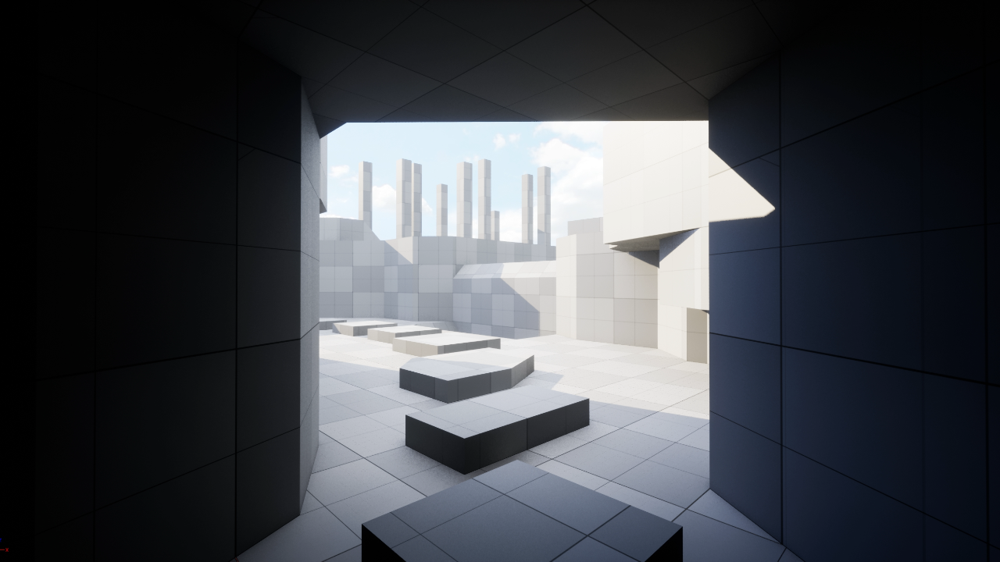
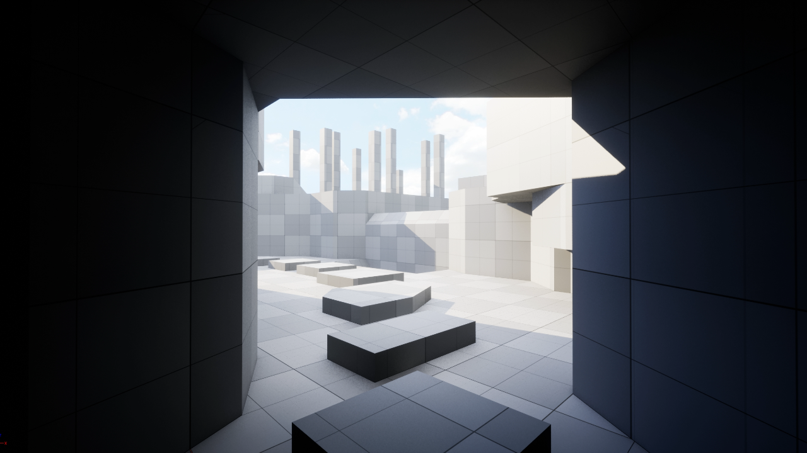
 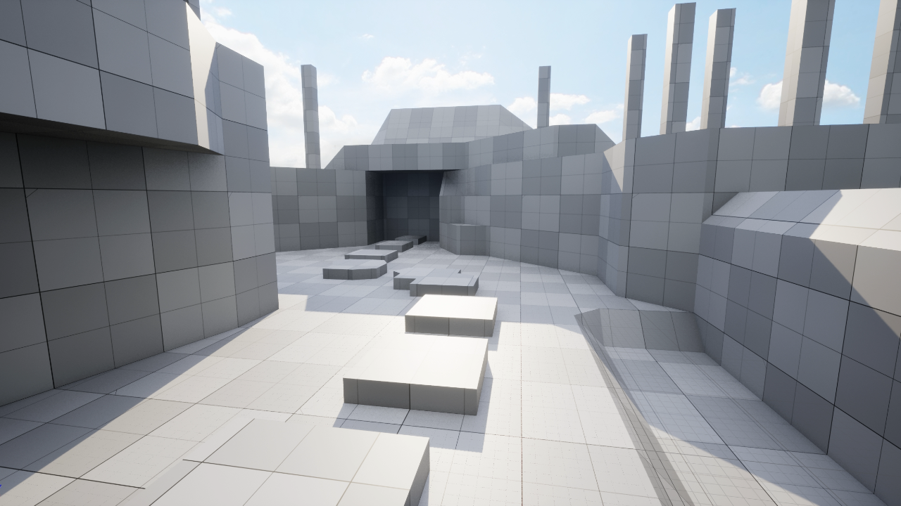
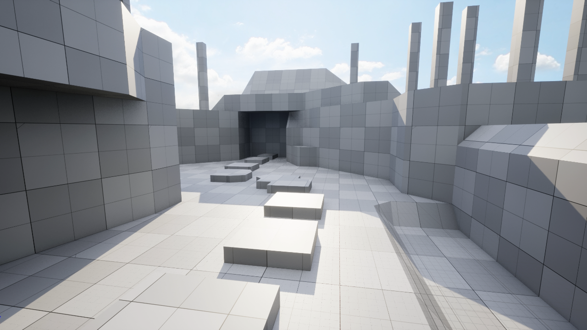
 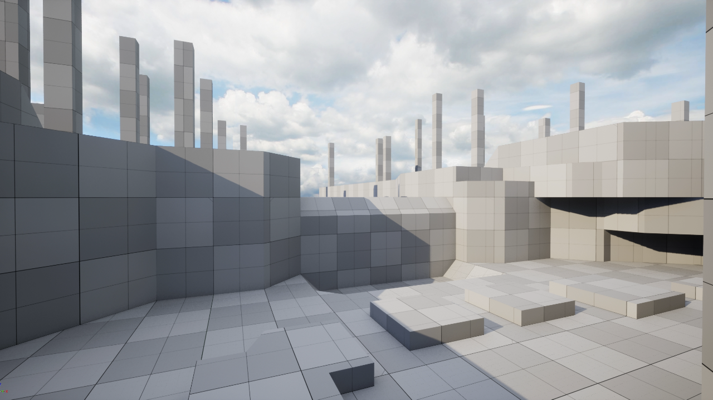
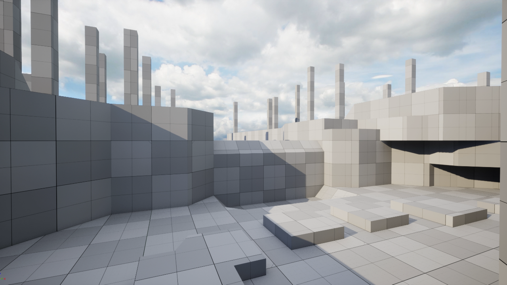

 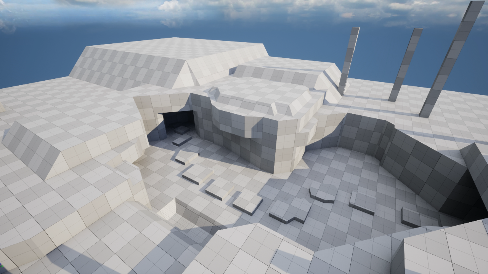
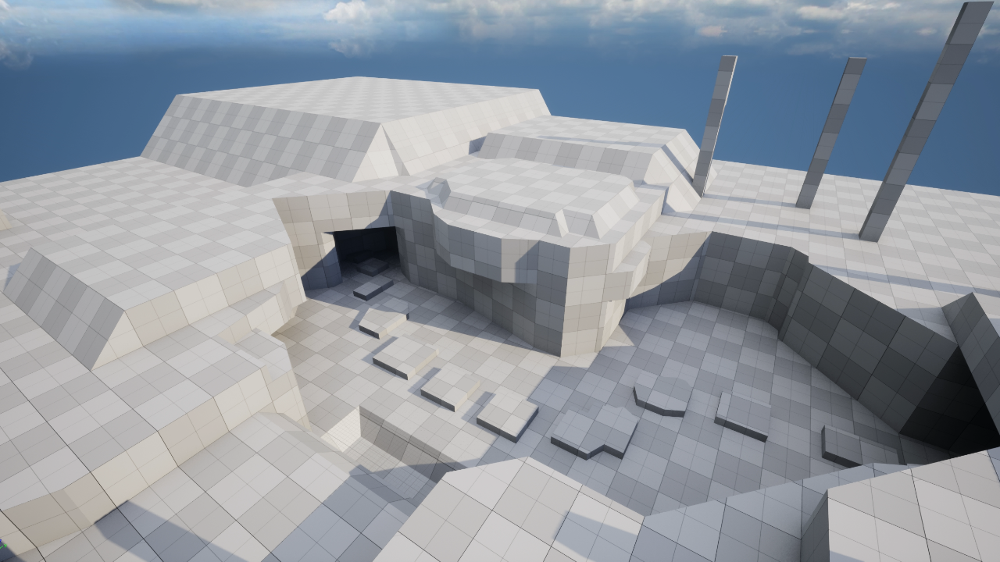
Decrepit Dungeon
This was made in Unreal Engine 5 for a school assignment.
Under a large medieval walled city, this dungeon for housing prisoners cuts across the city's sewage. The prison is for the most violent of offenders, and it always has guards present. It uses the sewage canal as a moat to separate the guards quarters from the rest of the prison just in case someone, or something, gets out of the depths of the prison. While the place is in a general state of disrepair, the walls to the break room were never rebuilt as the openings provided the guards a solid vantage point to watch the prisoners. I was going for a retro dungeon crawler aesthetic. I focused on trying to get interesting atmosphere, color, and lighting. I am aiming for the kind of thing you would find in old baldur’s gate games mixed with skyrim, zelda, and dark souls influences.

 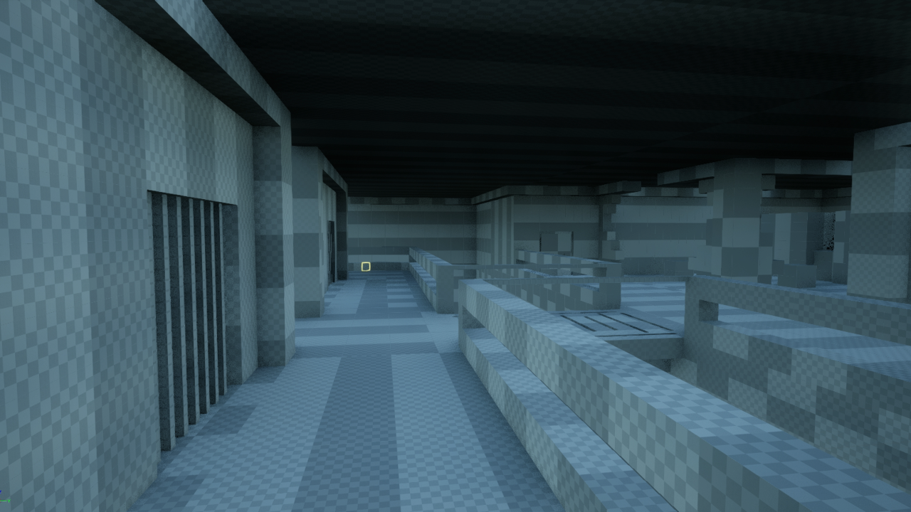
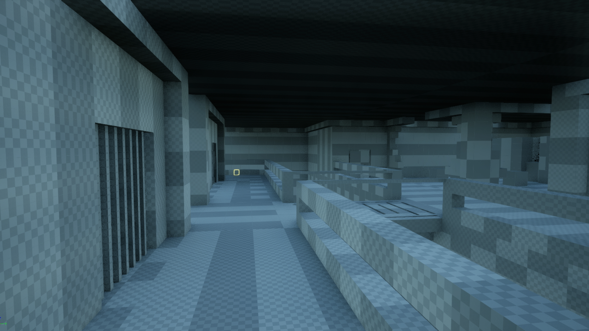


 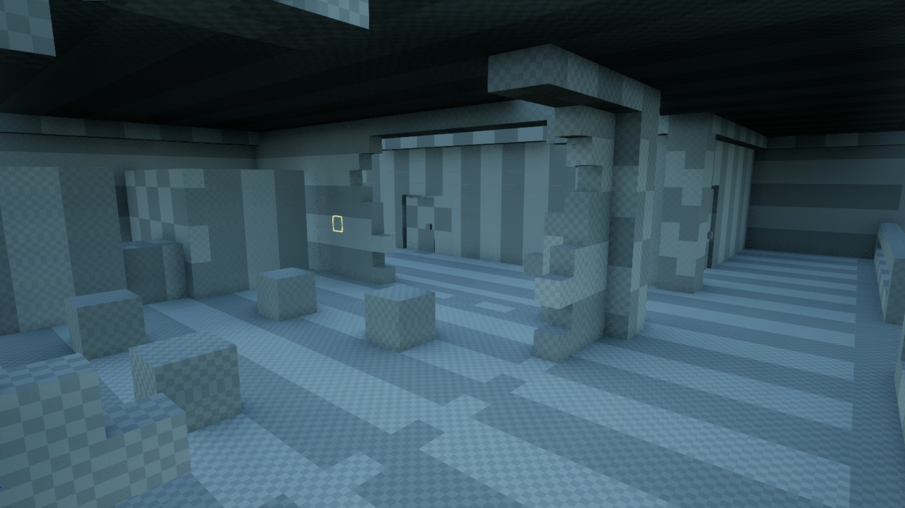
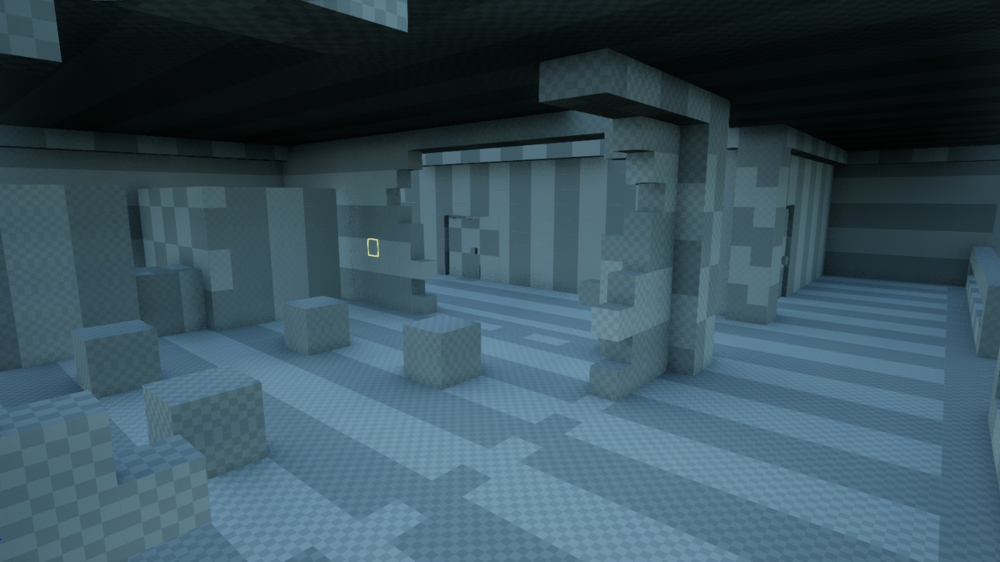

Downtown Deathmatch
This was made in Unreal Engine 5 for a school assignment.
I aimed to create a theoretical multiplayer map for a team-deathmatch style of game. This map would be in a walled off part of a downtown block. It would have hypothetically happened in a zombie outbreak. The area was walled off and support workers entered the zone before abandoning their positions as the outbreak became unmanagable.
I am paying attention to elements like leaving room for safe places to spawn, as well as playing attention and to the number of long lines of sight, because this is meant to be a multiplayer map. I used lots of abandoned vehicles, barricades, and overgrowth to break up lines of sight and add to the visual storytelling.